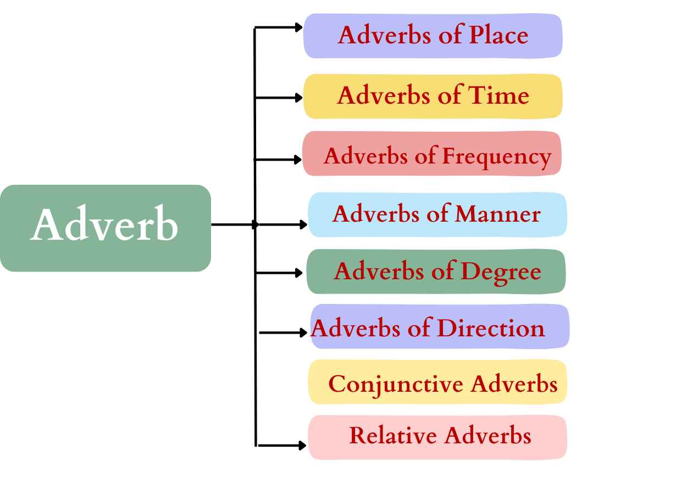

In the previous two classes we studied altogether four types of adverbs namely:
1. Adverbs of Place 2. Adverbs of Time
3. Adverbs of Frequency 4. Adverbs of Manner
Today we are going to focus on the following four types of adverbs:
1.Adverbs of Degree 2.Adverbs of Direction
3.Conjunctive Adverbs 4.Relative Adverbs
Before we focus on the next four types of adverbs let us catch up with the story!